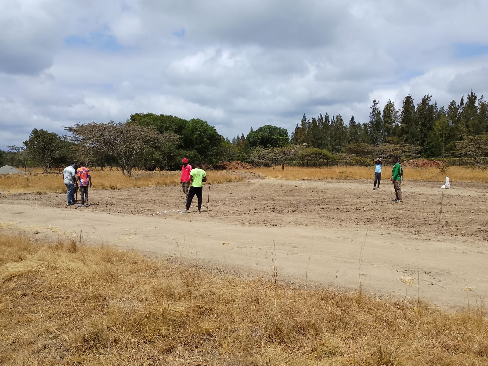
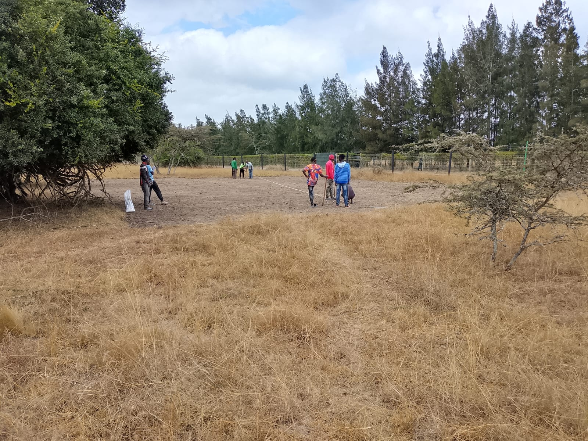
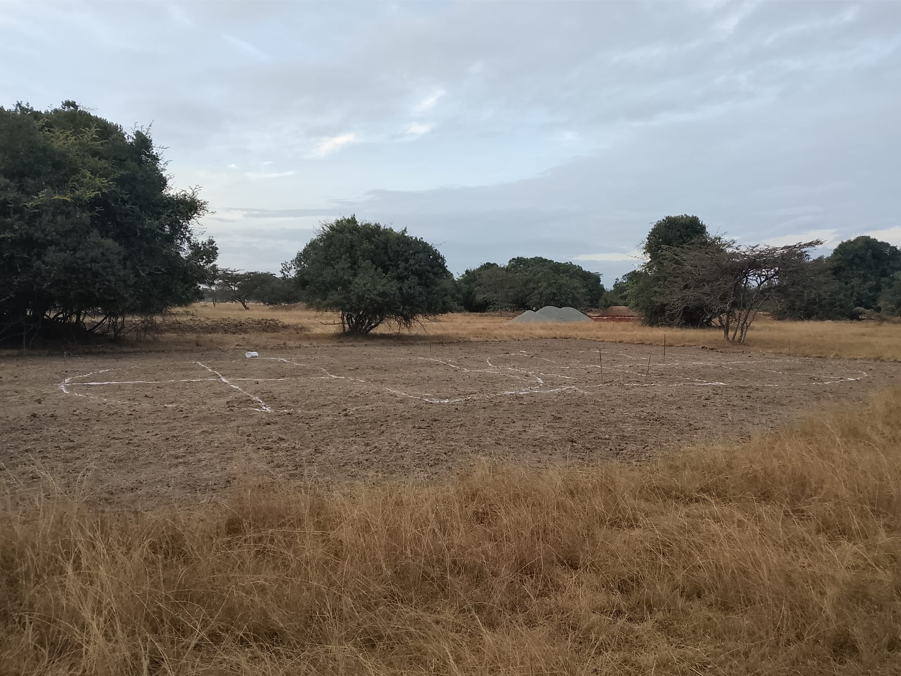
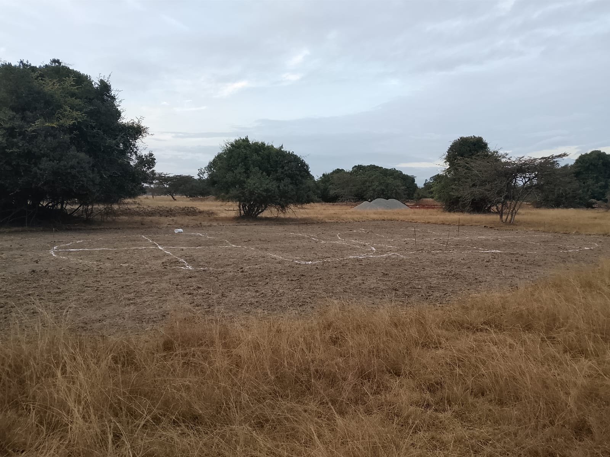
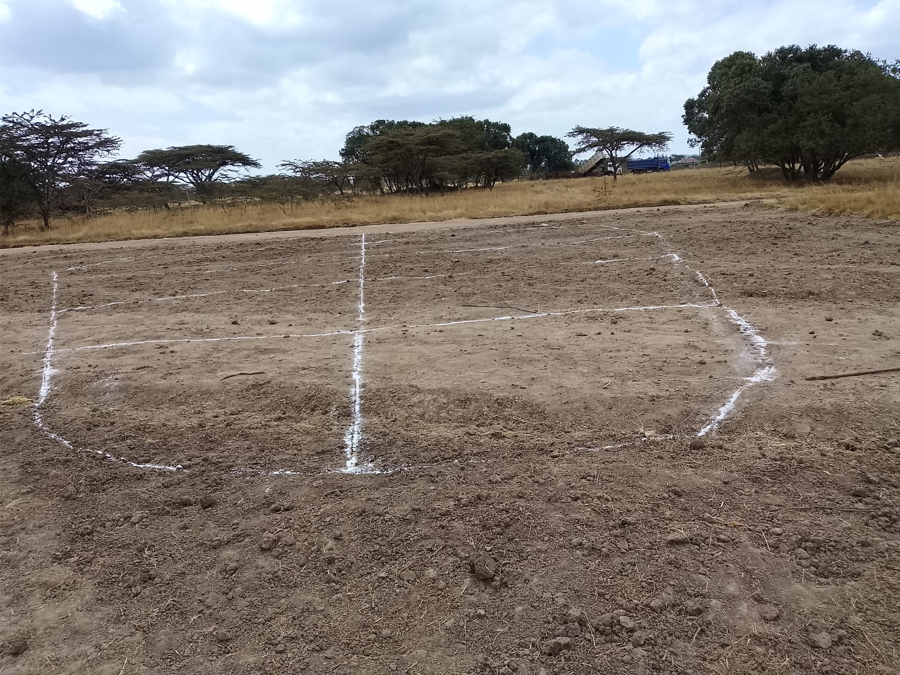
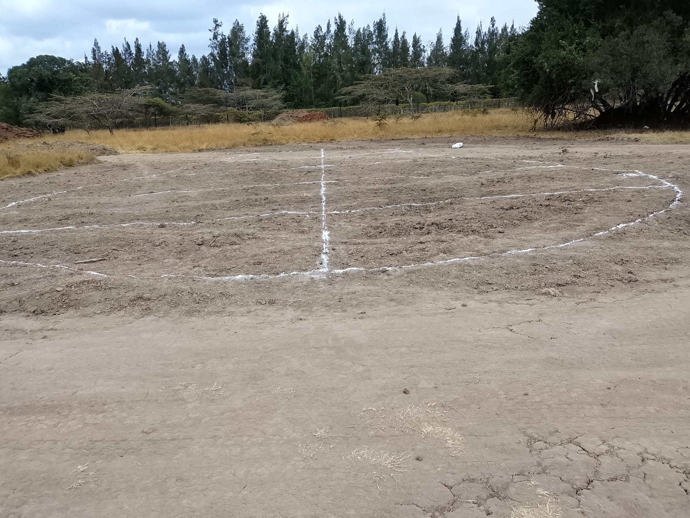
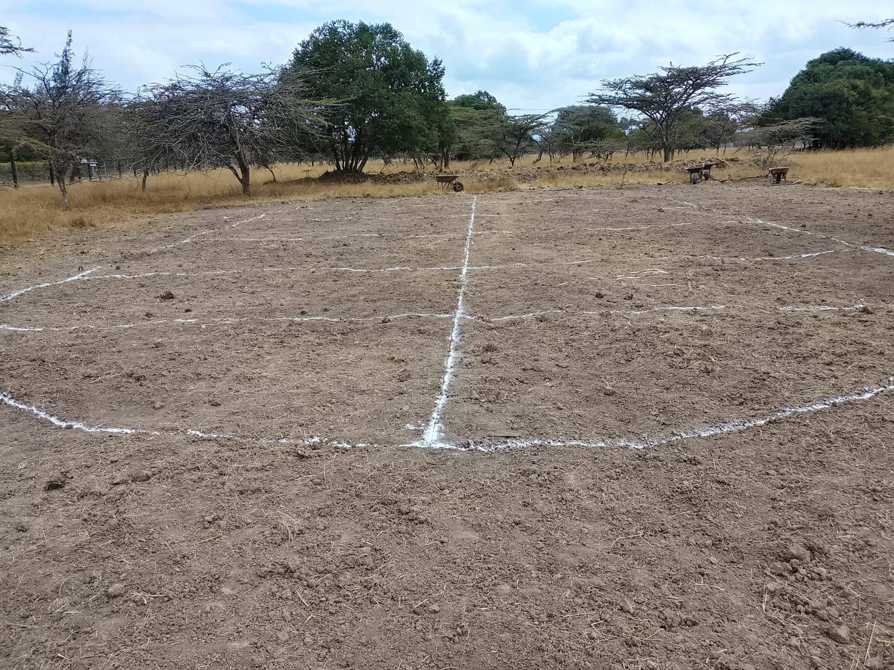

1. Mucheru World of Golf
Dam excavation, soil transport to tee boxes, 2nd Dam & inter-dam trench survey, and green trenching layout
- Dam 1 Excavation Milestone: Earthworks for Dam 1 have advanced significantly and are now estimated at 80% complete.
- Sunday Haulage Operations (Aug 9th): Soil was excavated and dumped on Tee Boxes 1, 11, 12, 13, 14, and 15 during Sunday operations.
- Trips Completed: 56 trips executed by haulage dump trucks.
- Operating Hours: 9.5 total work hours logged for excavation and transport machinery.
- Cumulative Soil Distribution: Excavated topsoil and subsoil from the dam pit have been moved to Tee Boxes 1, 2, 3, 4, 5, 6, 7, 8, 9, 11, 12, 13, and 14 so far.
📹 Dam 1 Excavation Video Documentation
- Marking of the 2nd Dam: Field survey and ground demarcation operations were conducted to outline the boundary perimeter for the 2nd Dam reservoir site.
- Inter-Dam Connecting Trench Layout: Surveyed and marked out the alignment for the connecting trench between Dam 1 and Dam 2 to facilitate future inter-reservoir water flow and drainage connection.
- Survey & Layout Marking: Green numbers 1, 2, and 3 were surveyed, measured, and chalk-marked on the ground today to outline exact trench lines.
- Trenching Preparation: Gridlines and outer perimeters have been established to guide oncoming sub-surface drainage and irrigation trenching teams.
📷 Golf Project Visual Documentation

Dam 1 Excavation Slope
Teal Sunward SWE210 excavator digging deep basin slope at Dam 1 pit.

Dam 1 ~80% Complete Overview
Panoramic wide view of excavated dam basin reaching ~80% completion.

Dam Excavation Basin Progress
Wide perspective showing large excavated soil mounds and basin depth.

Field Brief & Site Supervision
Joe inspecting active excavator operations and dam earthwork progress.

Loading Tipper Truck (White Tipper)
Excavator filling white dump truck with rich red earth from dam floor.

Loading Tipper Truck (Blue Tipper)
Sunward excavator loading heavy soil onto blue haulage truck.

Continuous Excavation & Haulage
Excavator bucket active in dam pit loading trucks during 9.5hr shift.

Soil Offloading on Tee Box
White dump truck tipping massive soil load onto designated tee box area.

Blue Dump Truck Unloading
Heavy haulage truck depositing excavated dam earth onto dry grassland tee box.

Soil Dumped at Tee Box Location
Large mounds of soil positioned on tee box ground ready for grading.

Tee Box Fill Stockpile
Accumulated dam soil dumped across tee box target areas under acacia canopy.

2nd Dam Site Survey & Demarcation
Work crew standing on open field establishing boundary perimeter for the 2nd Dam.

Placing 2nd Dam Boundary Markers
Field team member positioning pegs and boundary lines under trees at 2nd Dam site.

Connecting Trench Alignment Survey
Crew surveying and marking out trench line connecting Dam 1 and Dam 2.

Green Layout Measurement Team
Field team laying out measuring lines and chalk grids on green site.

Boundary & Trench Grid Survey
Workers taking exact measurements along green boundaries for trenching.

Green Perimeter Positioning
Work crew positioning string lines and chalk markers along green edge.

Trenching Grid Blueprint on Ground
Clear grid lines and chalk markings defining trenching patterns.

Marked Green Landscape View
Wide angle perspective of prepared green marked out for upcoming trenches.

Trench Grid Line Detail
Perpendicular white chalk lines marking internal drainage channels on green.

Close-Up Green Marking
Finished chalk grid outline ready for excavation crew and trencher.

Complete Green Layout Grid
Overview of completed chalk grid on Green 1, 2, or 3 prior to trenching.
2. Chaka Farms — Livestock & Canine Unit Operations
Dairy production, kennel sanitation, goat socialization, obedience commands, and canine health management
- Milking Yield Log: Daily milk collection recorded across morning and evening milking sessions.
| Session | Morning | Evening | Total Daily Yield |
|---|---|---|---|
| Milk Yield | 2.5 Litres | 2.5 Litres | 5.0 Litres |
- Kennel Sanitation & Hygiene: Kennels were thoroughly cleaned, washed, and dried.
- Kennel Manners: Daily discipline and behavior enforcement routines conducted in kennels.
- Morning Routine — Goat Socialization: Conducted outdoor walking and controlled socialization with goats in the morning, involving Logan and Coby exclusively.
- Afternoon Routine — Advanced Obedience Training: Executed dedicated afternoon command drills:
- Spin Commands: Focused body control and agility drills.
- Down & Sit Commands: Standard posture and stay execution.
- Obedience & Patience: Prolonged hold stays, focus exercises, and impulse control.
📹 Canine Unit Video Documentation
⚠️ Logan Back Wound Alert
During routine inspection, Logan was found to have a new skin lesion/wound on his lower back. The area is currently being thoroughly cleaned, disinfected, and treated daily by Willy to ensure proper healing and prevent infection.
📷 Canine Health & Veterinary Inspection

Logan Back Wound Inspection
Close-up inspection and cleaning of red skin wound on Logan's white fur back.